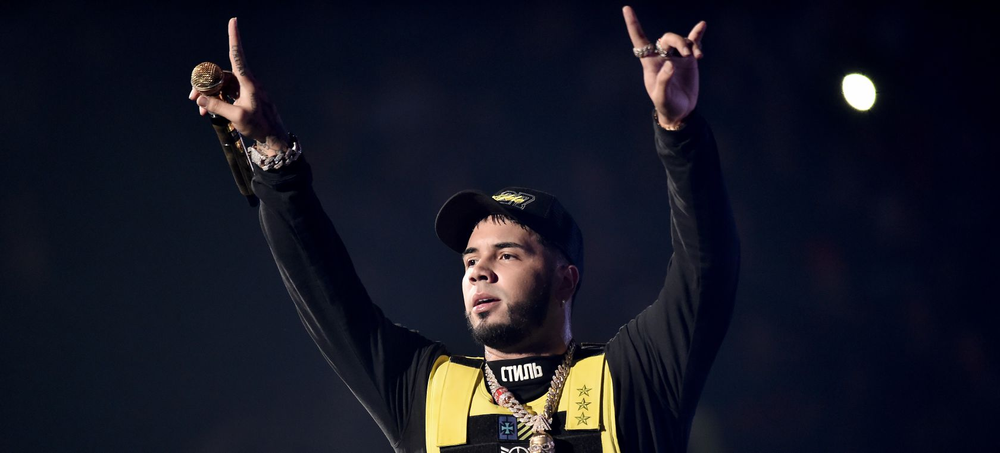

Anuel AA parece que no puede más. Después de rumores de separación con Karol G, ahora el reguetonero ha sorprendido a todos sus seguidores con un freestyle en el que se ha desahogado con un mensaje que ha revolucionado las redes sociales: Su retirada. Tomando como base la canción Thank You de Dido -aunque presumiblemente se trate del sample que le hizo Eminem en su mítico Stan- el intérprete de El Manual empieza ya tajante: "Sin ti yo no me siento bien […] Viviendo y por dentro muerto […] Antes éramos dos y ahora somos tres, con tu foto en la pared, de la soledad yo me enamoré…". Unas duras palabras que han desatado todo tipo de teorías en redes sociales.Con un aire de despedida, repasa su vida con detalles como su redención tras la cárcel o su dura infancia hasta llegar a una frase que ha roto los esquemas de los fans: "Mi hijo no quiere que cante, quiere que yo esté con él, por eso pienso retirarme porque más que sufre él". De esta manera, el reguetonero podría estar anunciando un posible descanso de la música para centrarse en su familia..
